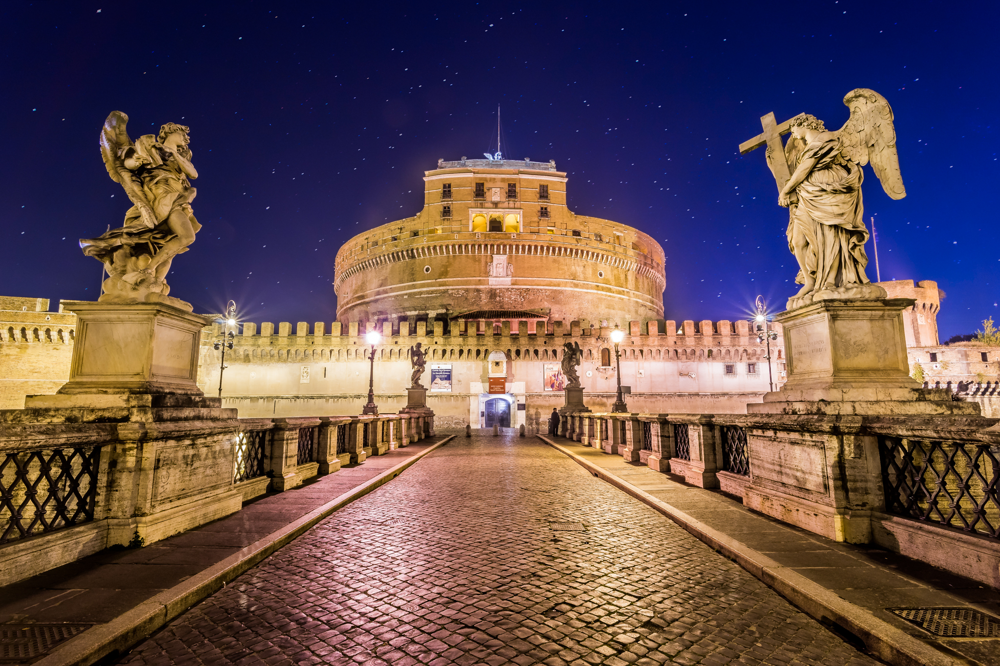

Castel Sant'Angelo
Castel Sant'Angelo, also known as the Mausoleum of Hadrian, is a towering cylindrical building in Rome. Originally constructed as a mausoleum for the Roman Emperor Hadrian and his family, it was later converted into a fortress and castle, and now serves as a museum.
The structure was completed in 139 AD and is one of the most prominent landmarks in Rome. It has served various roles throughout history, including as a papal residence and fortress. The building is renowned for its impressive architecture and historical significance, offering panoramic views of the city from its rooftop terrace.